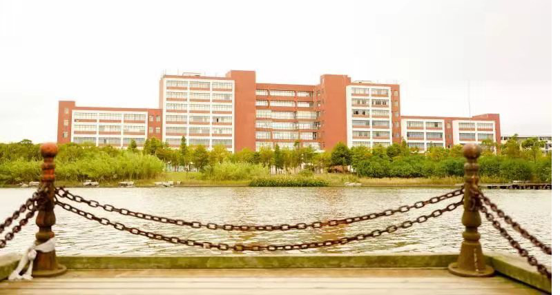

学校简介
华东理工大学原名华东化工学院，1952年由交通大学（上海）、震旦大学（上海）、大同大学（上海）、东吴大学（苏州）、江南大学（无锡）等校化工系合并组建而成，是新中国第一所以化工特色闻名的高等学府。1956年被定为全国首批招收研究生的学校之一，1960年起被中共中央确定为教育部直属的全国重点大学，1993年经国家教委批准，更名为华东理工大学，1996年进入国家“211工程”重点建设行列，2000年经教育部批准建立研究生院，2008年获准建设“985优势学科创新平台”，2017年入选国家“双一流”世界一流学科建设高校，化学、材料科学与工 程、化学工程与技术三个学科入选一流学科建设名单。 学校现有徐汇、奉贤和金山三个校区，占地总面积2535亩，各类建筑总面积92万平方米。图书馆总藏书量309.4万册，收藏中外文期刊合订本28.4万册。建有分析测试中心、珠宝检测中心等国家级计量认证单位。以乒乓球为代表的“体教结合”工作，建立了“一条龙”培养大学生运动员的创新体制，学校乒乓球队在国际乒乓球比赛中共获得金牌167枚。学校已连续11次荣获上海市“文明单位”光荣称号。在QS世界大学排名榜中，位列中国内地高校第26位；在泰晤士高等教育（THE）世界大学排名榜中，位列中国内地高校第26位；在USNews世界大学排名榜中，位列中国内地高校第35位；在ESI中国大学综合排名中，位列第28位。 学校设有20个学院，学科设置涵盖理、工、农、医、经、管、文、法、艺术、哲学、教育等11个学科门类。现有本科专业68个；一级学科硕士学位授权点27个，二级学科硕士学位授权点142个；硕士专业学位授权点11个；一级学科博士学位授权点13个，二级学科博士学位授权点80个；博士后科研流动站12个。拥有8个国家重点学科、10个上海市重点学科、7个上海高校一流学科。“化学工程与工艺”是中国大陆高校首个通过ABET认证的专业，“化学专业”是中国大陆高校首个通过中俄联合国际理科专业认证的专业。化学、材料科学、工程学、生物学与生物化学、药理学和毒理学等5个学科进入ESI全球前1%，化学学科进入全球前1‰。 今天的华东理工大学，坚持以习近平新时代中国特色社会主义思想为指导，全面贯彻落实全国教育大会精神，按照学校第十一次党代会确立的目标任务，立足新时代，扎根中国大地，努力建设社会主义一流大学!